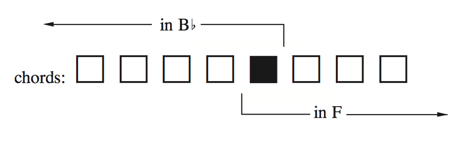
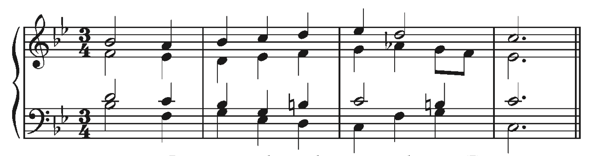

Modulations Using Diatonic Common Chords
Chapter 18
Tonal Harmony – Kostka, Payne, Almén
Modulation and Change of Key
Almost all compositions from the tonal era begin and end in the same key.
A piece may change mode, but the keynote remains the same.
For example:
- C Major → c minor
- d minor → D Major
Change of Mode: Takes place when music moves from one key to its parallel key.
Modulation and Change of Key
Even multimovement works begin and end in the same key, although the interior movements will of ten be in different keys.
Change of Key: A shift of tonal center that takes place between movements of a composition.
Modulation: A shift of tonal center that takes place within an individual movement.

The line between modulation and tonicization (the use of secondary functions like V/V) is not meant to be clearly defined in tonal music.
Let's look at Beethoven Symphony No. 7, Allegretto
Key Relationships
Enharmonically equivalent keys: Two keys that sound the same but are spelled differently
Parallel keys: a major and minor key that share the same tonic note
Relative keys: a major and minor key that share the same key signature
Closely related keys: keys where there is a difference of no more than one ♯ or ♭ in the key signature
Closely related keys
Most modulations in tonal music are between closely related keys
There are three ways to find keys closely related to a starting key
- by looking at the key signatures that are within one ♯ or ♭ of the starting key
- the keys represented by the tonic, subdominant, & dominant triads and their relative keys
- the keys represented by the diatonic major and minor triads (only) of the home key.
foreign keys
Distantly related keys: any key relationship that has not been previously described.
Key Relationships
- Enharmonic
- Parallel
- Relative
- Closely Related
- Foreign (distantly related)
Common-Chord Modulation
Most modulations are made smoother by using one or more chords that are common to both keys as an intersection between them.
Common chord: a chord that is diatonic in both keys and acts as a kind of hinge or pivot between the two tonalities.
also commonly called a pivot chord
Common-Chord Modulation
the shaded box represents a common-chord between B♭ and F
Common-Chord Modulation
Any pair of closely related keys will have at least one diatonic triad in common
To determine that potential common chords between two keys, consider the diatonic triads found in the first key to see whether they occur in the second key.
Let's do this with a few modulations
Common-Chord Modulation
Analyzing Common-Chord Modulation
How to analyze a modulation
- Listen to the passage carefully.
- Find the point of modulation, that is, the first chord that seems to be functioning more naturally in the second key than in the first one.
- Back up one chord from the one you identiied in step 2. If there is a diatonic common chord, it should be in this position.
Analyzing Common-Chord Modulation
The most common modulation in major keys is I–V.
In minor keys it is i-III.
However, all other closely related modulations do occur.
Bach, French Suite № 5, BWV 816, Gavotte